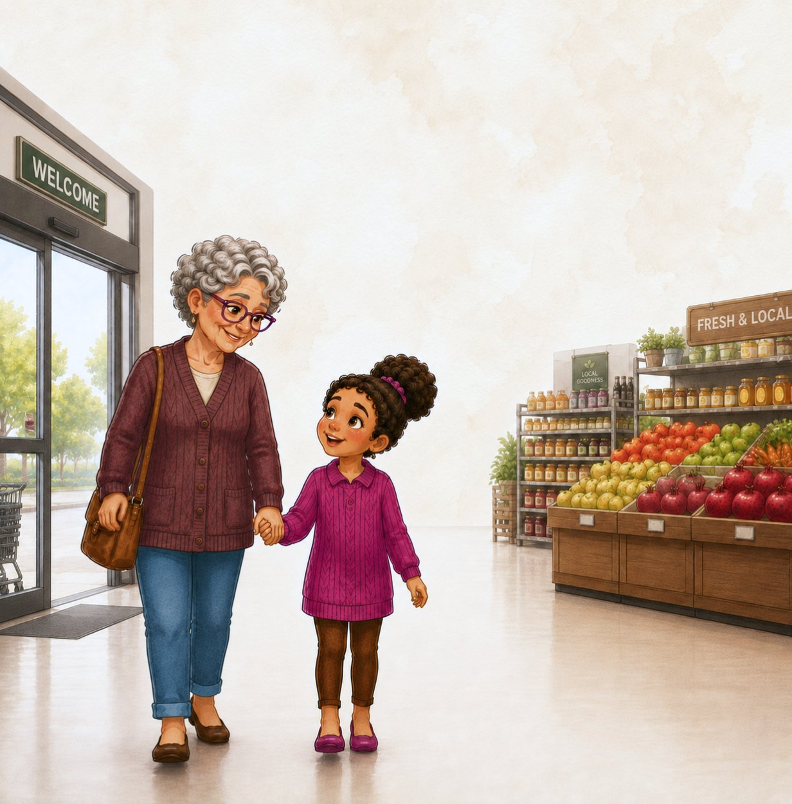
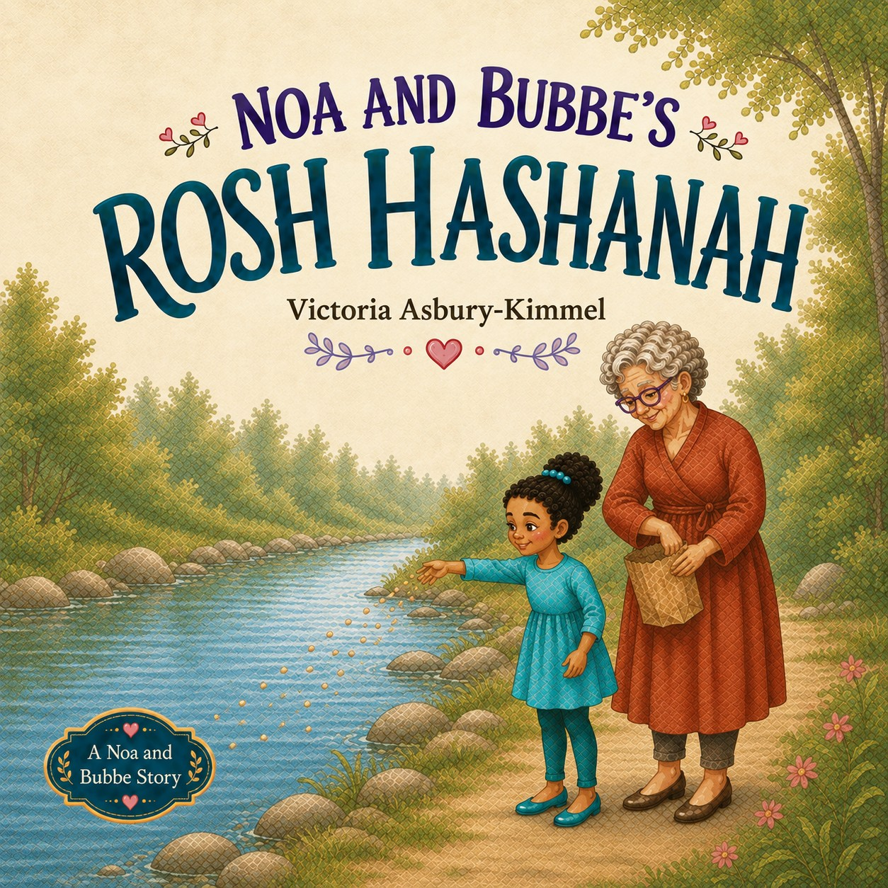
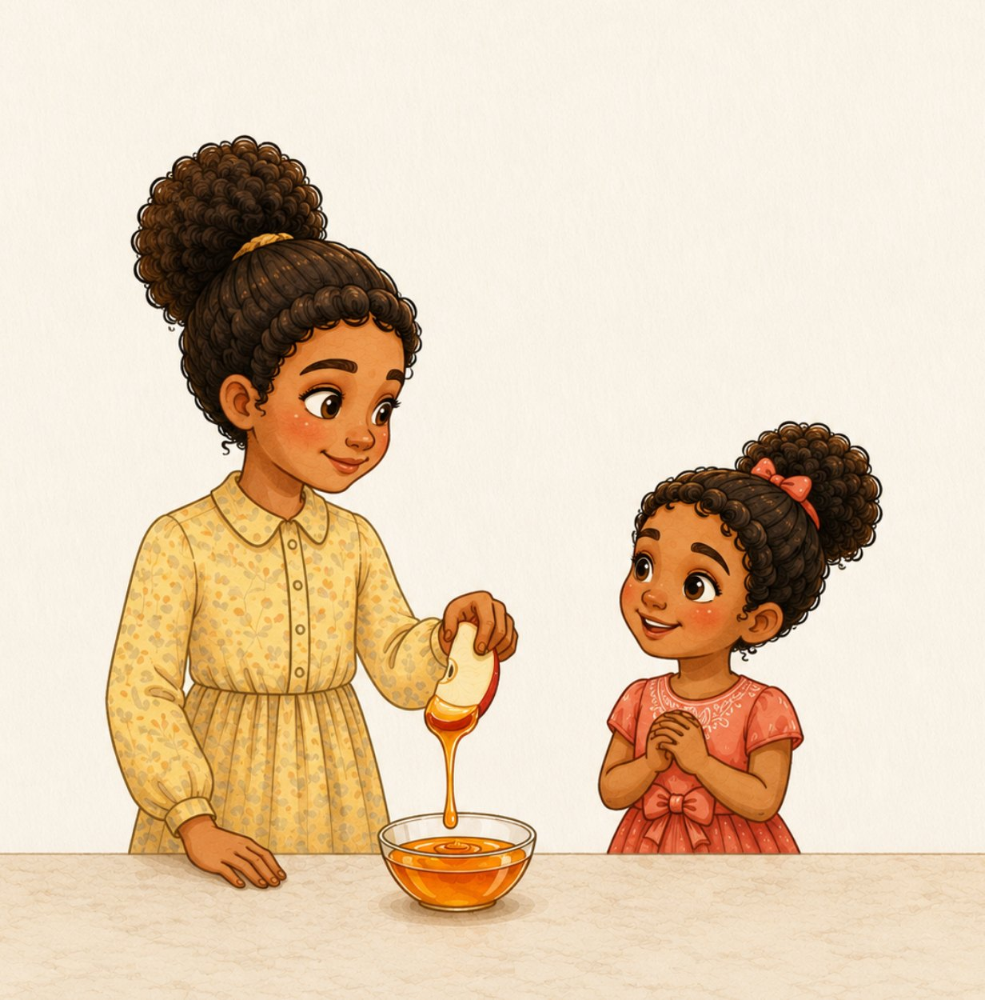
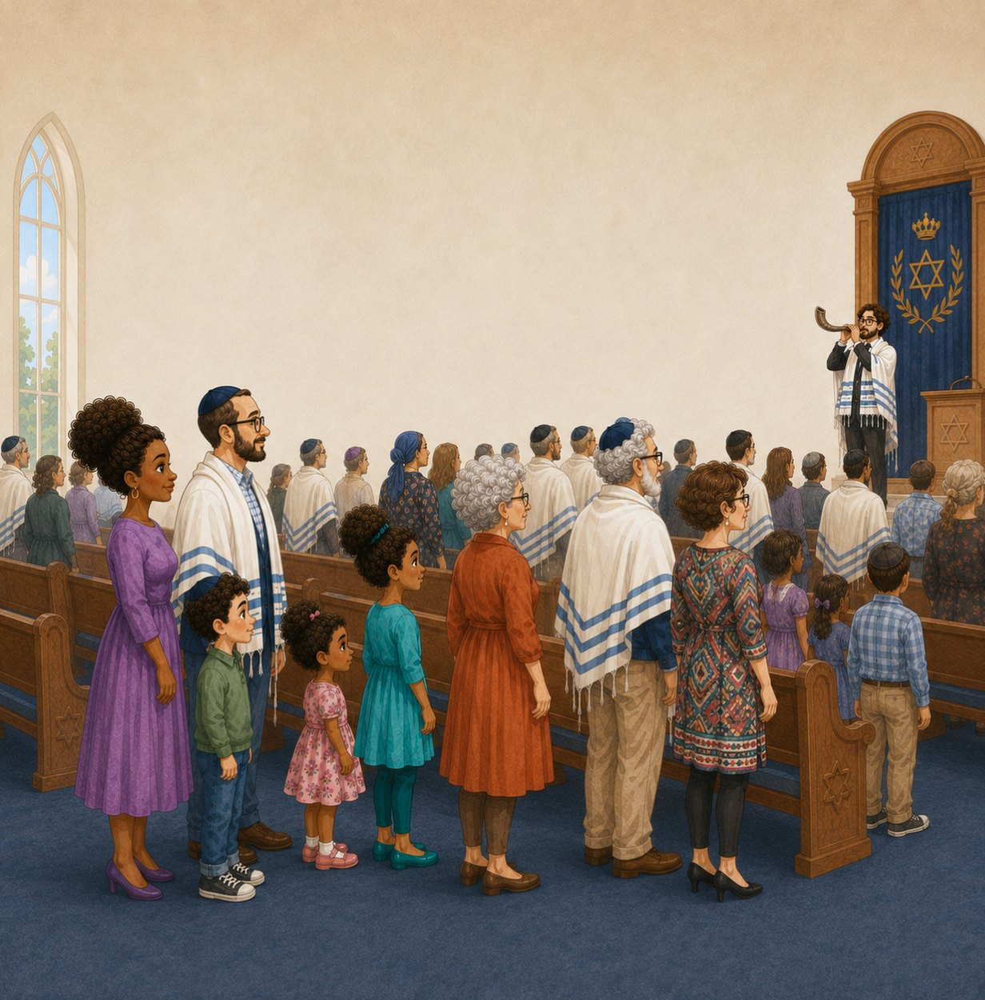
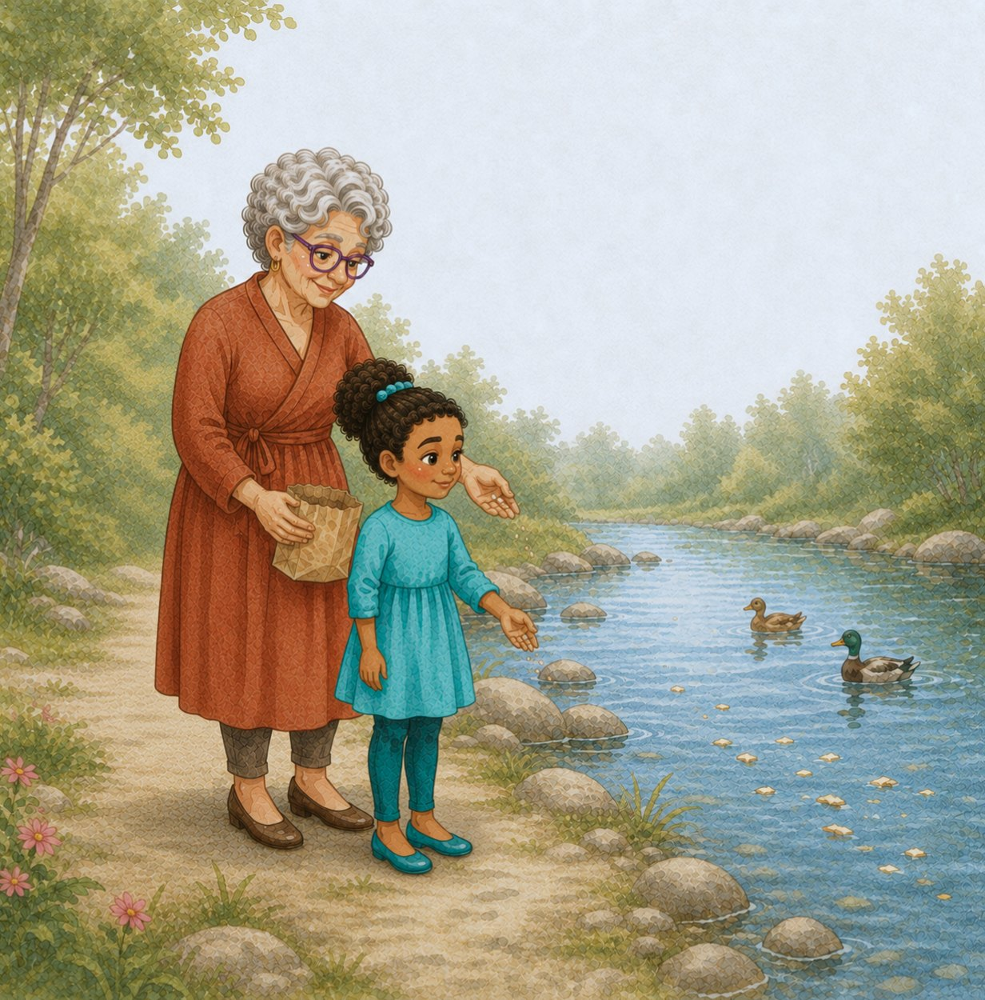
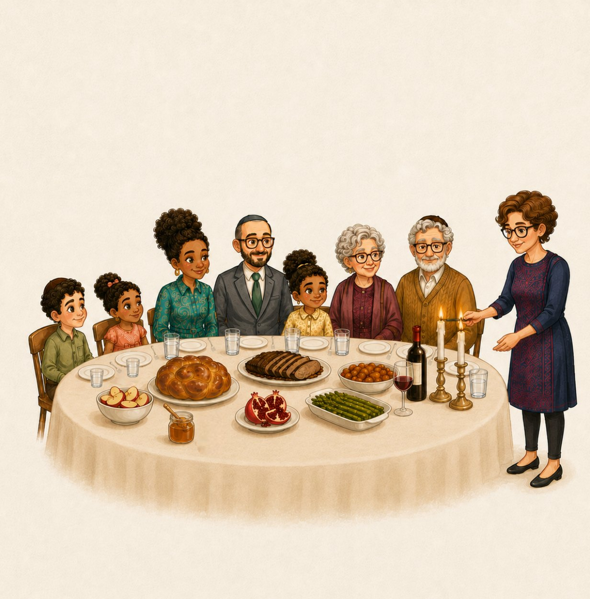

01
Prepare together
Noa and Bubbe shop for the special foods their family will enjoy for Rosh Hashanah.
A Noa + Bubbe story
Celebrate the sweetness of a new year with Noa and Bubbe.
From choosing a round challah and dipping apples in honey to hearing the shofar and taking part in Tashlich, Noa discovers the meaning behind cherished Rosh Hashanah traditions.

Inside the story

Noa and Bubbe shop for the special foods their family will enjoy for Rosh Hashanah.

Apples and honey become a simple way to talk about hopes for a sweet new year.

The shofar reminds the family to wake up their hearts and think about the year ahead.

At Tashlich, Noa learns about leaving mistakes behind and starting the new year with renewed purpose.
“Every Rosh Hashanah gives us a new beginning. Every year is another chance to do better.”
— NoaThemes in the book
The story introduces round challah, apples and honey, pomegranates, the shofar, Tashlich, holiday meals, and the idea of setting intentions for the year ahead.
Rosh Hashanah resources